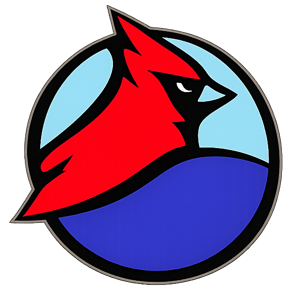

Closing the climate language gap.
We believe climate action shouldn't be lost in translation. From Kumasi to the world, our volunteers turn research into resilience — in the languages communities actually speak.


A growing, global footprint
Translation → Awareness → Resilience
1 · Translate
We convert climate science and risk indices into Indigenous and local languages so no community is left out of the conversation.
2 · Raise Awareness
Translated resources power seminars, school outreach and advocacy — from campus halls to COP and Davos.
3 · Build Resilience
Informed communities lead their own adaptation: tree planting, disaster preparedness and sustainable habits.
Program spotlights
Resilience in the Himalayas
Mobilising 21 youth to lead disaster-preparedness workshops in mountain communities facing glacial risk.
Inclusive Adaptation
Translating the Climate Risk Index into Indigenous languages so children and families can act on it.
From COP to Davos
Bringing youth voices from the Global South to the tables where climate policy is actually decided.
Climate Philanthropy: The Language Gap
Case studies from 12 chapter hubs, a philanthropy landscape analysis, and our translation methodology & accuracy metrics.
2025
Become a Climate Cardinal
Your time or your gift turns climate knowledge into real-world resilience across the Ashanti region and beyond.